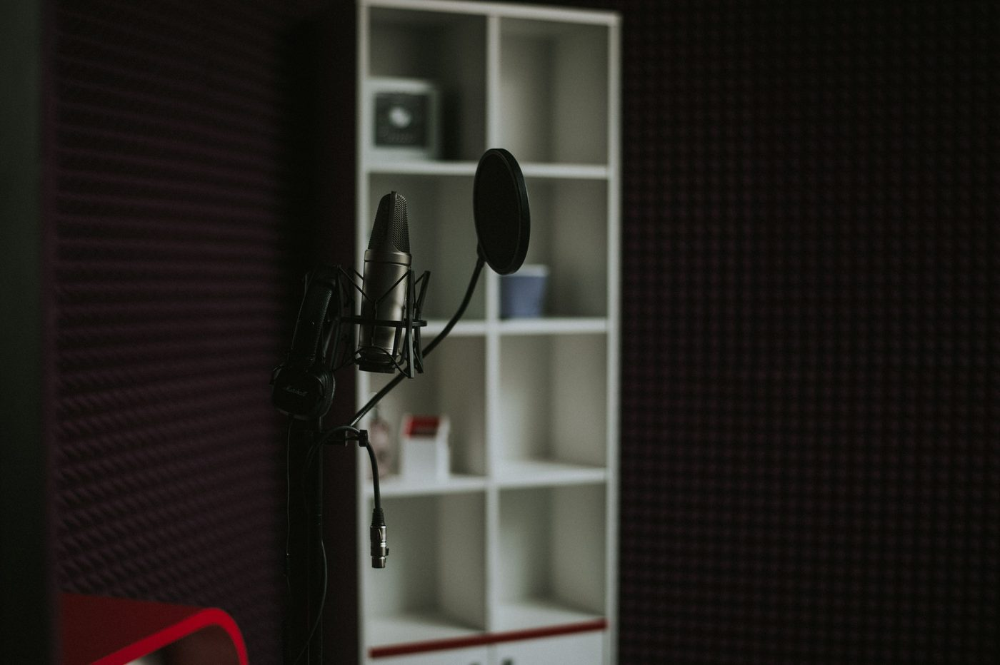
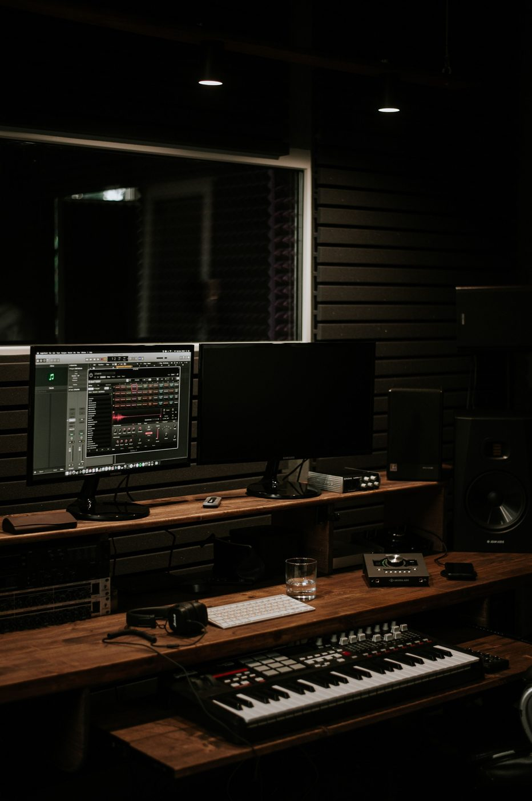
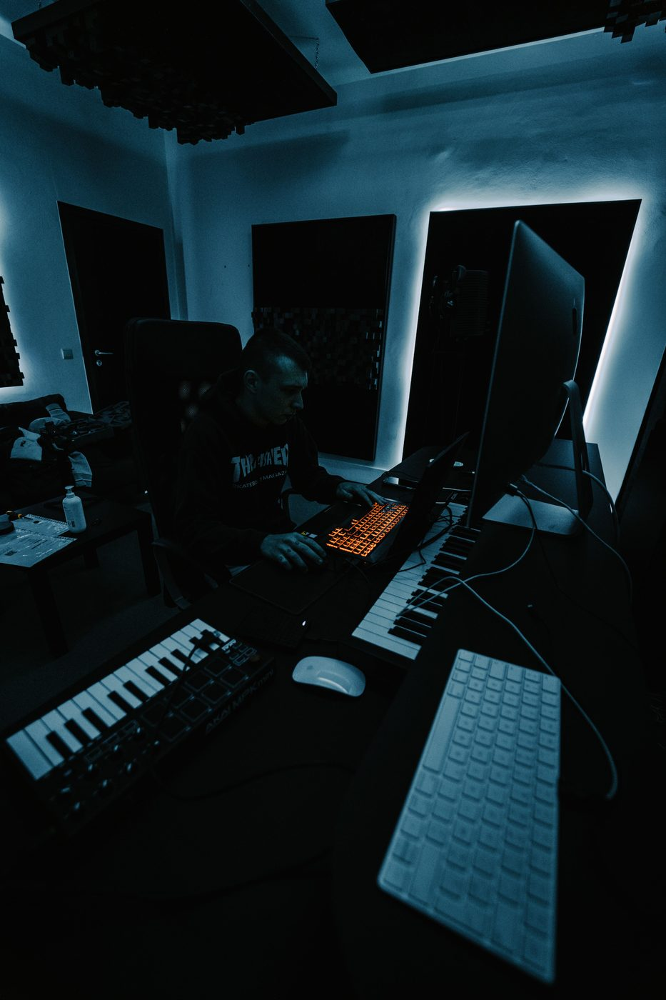

Запись вокала в Нячанге: как проходит сессия
Шаги сеанса, сколько нужно времени и какие файлы получаешь на руки.

Где записать песню во Вьетнаме русскоязычному артисту
Студия в Нячанге с русскоязычным звукорежиссёром и удалённое сведение.

Записать трек за один день на отдыхе в Нячанге
Честный тайминг: что успеть за день и что подготовить заранее.

Как подготовиться к записи в студии
Что взять с собой и как отрепетировать, чтобы записаться быстрее и сэкономить время.

Что такое сведение трека и зачем оно нужно
Чем сведение отличается от записи и что происходит с дорожками после студии.

Сколько стоит записать трек в Нячанге
Цены на запись и сведение в студии The Black Tea Production и какой тариф выбрать.